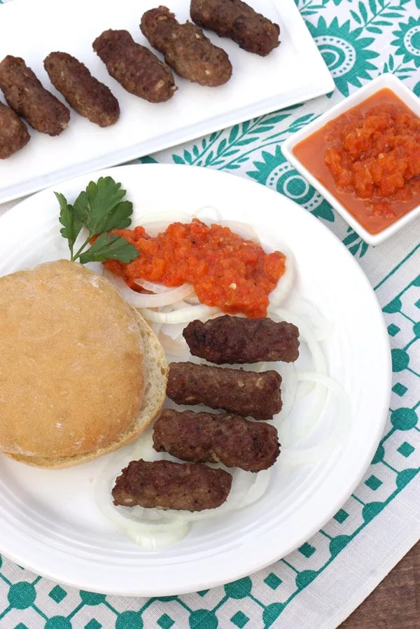

Cevapi

Description
Cevapi is a grilled dish of minced meat found traditionally in the countries of southeast Europe. It is considered a national dish of Bosnia and Herzegovina and Serbia and is also common in Albania, Bulgaria, Croatia, Kosovo, Montenegro, North Macedonia, and Slovenia.
Ingredients
- Ground beef, pork
- Garlic cloves
- Black pepper, paprika
- Cheeses
- Egg
- In a large bowl mix together all ingredients.
- Using slightly over 1 Tbsp of meat mixture per sausage, shape the mixture into sausages the size and shape of a fat finger (roughly 3 inches long and ¾ of an inch in diameter).
- Place all the formed sausages in a single layer on a platter. Cover the platter and refrigerate for at least 1 hour (up to overnight).
- When you are ready to cook your sausages, preheat your grill to medium heat, 350-400⁰F. (You should be able to hold your hand a few inches from the cooking grate for 5-7 seconds.)
- Grill the sausages using a fine grate grill pan for 4-5 minutes a side, until golden and springy.
- Serve the cevapi with sliced sweet onions and flatbread (like lepinja or pita).